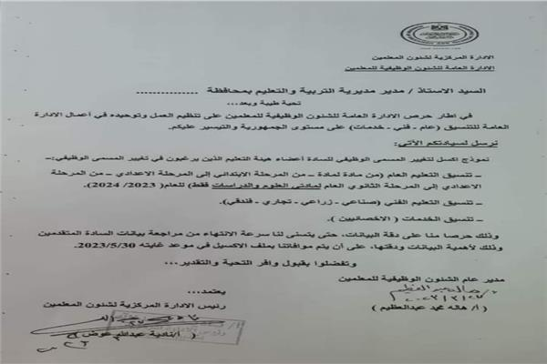

التعليم ترسل خطابا للمديريات بشأن نموذج تغيير المسمى الوظيفي للمعلمين
أرسلت الإدارة المركزية لشئون المعلمين بوزارة التربية والتعليم والتعليم الفنى خطابا إلى المديريات التعليمية، موضحة أنه في إطار حرص الإدارة العامة للشئون الوظيفية للمعلمين على تنظيم العمل وتوحيده في أعمال الإدارة العامة للتنسيق (عام) - فني - خدمات على مستوى الجمهورية والتيسير عليكم، يوجد نموذج اكسل لتغيير المسمى الوظيفي لأعضاء هيئة التعليم الذين يرغبون في تغيير المسمى الوظيفى، وفق الضوابط التالية:
تنسيق التعليم العام من مادة لمادة - من المرحلة الابتدائي إلى المرحلة الاعدادي - من المرحلة الاعدادي إلى المرحلة الثانوي العام لمادتي العلوم والدراسات فقط) للعام ( 2024/2023).التعليم ترسل خطابا للمديريات بشأن نموذج تغيير المسمى الوظيفي للمعلمين
- تنسيق التعليم الفني صناعي - زراعي - تجاري - فندقي).
تنسيق الخدمات ( الاخصائيين ).
وأوضحت أن هذه الإجراءات حرصا على دقة البيانات، حتى يتسنى لنا سرعة الانتهاء من مراجعة بيانات المتقدمين وذلك لأهمية البيانات ودقتها، على أن يتم موافاة الوزارو بملف الاكسيل في موعد غايته 2023/5/30.
وحددت المديريات التعليمية فى وقت سابق ضوابط وشروط تغيير المسمى الوظيفي لشاغلي وظائف المعلمين للعام الدراسي الحالى، إلى التخصصات والمواد الأخرى والوظائف والمراحل التعليمية المختلفة.
وأوضحت المديريات التعليمية، أن ضوابط استلام طلبات تغيير المسمى الوظيفي لشاغلي وظائف المعلمين للعام الدراسي الحالى كالتالى:
- الالتزام بأحكام القرار الوزاري 41 بتاريخ 20 فبراير 202
- الحصول على مؤهل عال من كليات التربية أو مؤهل عال بالإضافة إلى شهادة أو أجازة تأهيل تربوي .
- أن يناسب المؤهل الدراسي مع التخصص والمرحلة الدراسية التي يرغب في الانتقال إليا الحصول على تقدير كفاية بمرتبة كفء خلال العامين الأخيرين.
- الالتزام بموافقة صريحة من التوجيه العام بالمديرية للمادة الدراسية أو المرحلة التي يرغب الانتقال إليها .
محتويات ملف النقل
- غلاف خارجي يحتوي على البيانات الأساسية.
- صورة من بطاقة الرقم القومي .
- استمارة النقل كاملة التوقيعات والموافقات والأختام.
- صورة طبق الأصل من المؤهل الدراسي التربوي أو المؤهل التربوي . ه صورة طبق الأصل من قرار التسكين على الكادر .
- صحيفة أحوال ورقية معتمدة وأخرى اليكترونية معتمدة.
- صورة طبق الأصل من أخر تقريرين على أن تكون الدرجة كفء نسخة اليكترونية من ملف التقديم .
- إفادة بالعمل بالمرحلة المراد التغيير إليها .
- تسلم الطلبات نسخة ورقية معتمدة وأخرى اليكترونية (CD) إلى تنسيق وظائف التعليم العام بالإدارات التعليمية.